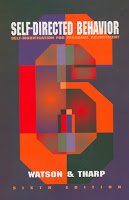

|
BEHAVIOUR MODIFICATION
|
|
- Behavior Modification: What It Is and How to Do It, 4th Ed.
Garry Martin, Joseph Pear
1992 (orig 1978) | Prentice Hall NJ
- not in library
- Behavior Modification CONTENTS
PART I The Behavior Modification Approach
(theoretical foundations)
PART II Basic Behavior; Principles and Procedures
(making program)
PART III Some Preliminary Considerations to Effective Programming Strategies
PART IV Dealing with Data
PART V Putting it all Together
PART VI Behavior Modification: A Rapidly Growing Concern
|
|
- PART I) The Behavior Modification Approach
- ch1) Introduction
- ch2) Areas of application: an overview
- PART II) Basic Behavior Principles and Procedures
- ch3) Getting a behavior to occur more often with positive reinforcement
- ch4) Decreasing a behavior with extinction
- ch5) Getting a New Behavior to occur: An application of Shaping
- ch6) Developing behavioral persistence through use of Intermittent Reinforcement
- ch7) Types of Intermittent Reinforcement and Decrease Behavior
- ch8) Doing the right thing at the right time and place is a matter for Stimulus Discrimination Training
- ch9) Developing appropriate behavior with Fading
- ch10) Developing and maintaining behavior with Conditional Reinforcement
- ch11) Getting a new behavior to occur with Behavioral Chaining
- ch12) Transferring behavior to new settings and making it last: Generality of Behavioral Change
- ch13) Eliminating Inappropriate Behavior through Punishment
- ch14) Establishing a Desirable behavior by using Escape and Avoidance Conditioning
- ch15) Procedures based of Principles of Respondent Conditioning
- PART III) Some Preliminary Considerations to Effective Programming Strategies
- ch16) Short-Cut tactics with stimulus control:
Instruction, Modeling, Guidance, Situational Inducement
- ch17) Alternative Strategies for decreasing behavior
- PART IV) Dealing with Data
- ch18) Behavioral Assessment: Initial considerations
- ch19) Direct Behavioral Assessment: What to record and how
- ch20) Doing Research in Behavioral Modification
- PART V) Putting it All Together
- ch21) Designing a program to overcome a behavioral handicap
- ch22) Token economics
- ch23) Helping an individual to develop Self-Control
- ch24) Systematic Self-Desensitization
- ch25) Cognitive Behavior Modification
- ch26) Areas of Clinical Behavior Therapy
- PART V) Behavior Modification: A Rapidly Growing Concern
- ch27) Giving it all some perspective: A Brief History
- ch28) Ethical Issues
|
|
|
- Behavior Therapy: Concepts, Procedures and Applications
Geoffrey L. Thorpe, Sherl L. Olson, Toronto
1990 | Allyn and Baco, MA
- Behavior Therapy CONTENTS
- not in library
|
|

|
- Self-Directed Behavior: Self-Modification for Personal Adjustment, 6th Ed.
David L. Watson, Ronald G. Thorp
1993 | Brooks/Cole Pacific Groove California | Woodsworth Inc
- Self-Directed Behavior CONTENTS
- not in library
|
[back to vault]
|